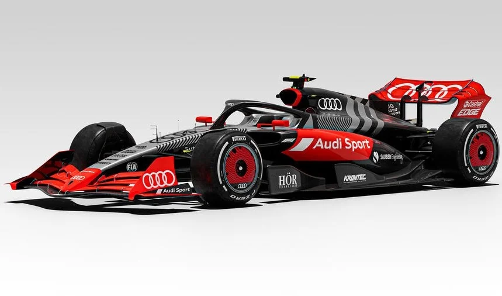

Fórmula 1: O Ápice da Engenharia e Velocidade
A Fórmula 1 é o ápice da engenharia automotiva e do desempenho humano. Frequentemente chamada de "Circo da F1" devido à sua natureza itinerante e espetacular, a categoria não é apenas uma corrida de carros; é um laboratório de alta velocidade onde a ciência encontra a coragem.
A Anatomia de um Carro de F1
Um carro de Fórmula 1 moderno não é apenas um veículo, mas um "caça terrestre".
Aerodinâmica: Cada asa, aleta e o próprio assoalho do carro são desenhados para gerar downforce (pressão aerodinâmica). Isso permite que o carro faça curvas a velocidades que desafiam a gravidade, colando os pneus no asfalto.
A Unidade de Potência: Esqueça os motores convencionais. O coração de um F1 é um sistema híbrido altamente complexo. O motor V6 turbo de 1,6 litro trabalha em conjunto com sistemas de recuperação de energia (ERS), gerando cerca de 1.000 cavalos de potência.
O Volante: Com mais de 25 botões e interruptores, ele controla tudo, desde o balanço de freio até o fluxo de combustível e a ativação do DRS (Asa Móvel).
O Atleta por Trás do Capacete
Diferente do que muitos pensam, pilotar um F1 exige um preparo físico de elite:
Força G: Nas curvas e frenagens, os pilotos suportam forças de até 5G ou 6G. Isso significa que a cabeça e o capacete pesam cinco vezes mais, exigindo músculos do pescoço extremamente fortes.
Perda de Peso: Em uma corrida quente, como no GP de Singapura, um piloto pode perder até 4 kg de fluídos corporais devido ao calor extremo do cockpit.
Data da postagem: 20/03/2026 as 00:01h